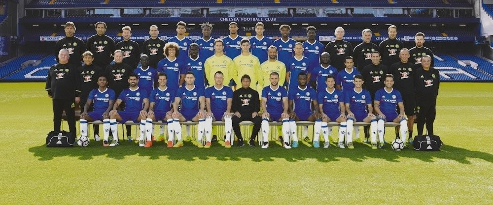

리그 7라운드부터 19라운드까지 13연승을 달리며 구단 역사상 최다 연승 기록을 수립했다.
모호한 프리시즌, 뜬금포 캉테를 제외하면 성에 차지않는 영입, 작년과 달라질바 없는 경기력에 저번 시즌 막판부터 폼이 올라온 디에고 코스타의 하드캐리로 겨우겨우 승점을 챙겨가다가 형제 구단에게 참교육 당하며 그럼 그렇지라며 모두가 포기하던 순간 헐시티전을 기점으로 콘테가 쓰리백을 꺼내들었고, 프리미어리그 최다연승 타이기록 및 구단자체 최고기록을 갱신하며 정신나간 포스를 보여주며 죽을 쓰던 나머지 리그 라이벌들을 재치고 우승을 차지한다.
우수한 풀백이며, 공격도 강점이 있긴하지만 돌파력에 약점이 있던 탄코를 스토퍼로, 가출을 일삼던 루이스를 스위퍼로, 13-14시즌 이후로 폼이 계속 떨어지던 케이힐의 커버범위를 줄여주며 피지컬과 대인방어,경험만을 살리는 기용, 톱급 윙어로서는 아쉽던 모제스의 윙백, 아자르에게 더 많은 자유를 부여하는 등 선수 개개인의 디테일에 기반하여 맞춤 수트처럼 재단된 전술은 리그에 센세이션을 일으켰다.
그 이전에 쓰리백을 시도하는 구단들은 있었지만 대부분 결말이 좋지 못하거나 하위권들의 텐백을 가동할때나 사용되는 방식이었으나 첼시의 성공이후로 라이벌이자 강팀들인 아스널,토트넘,맨유까지 채용하는 등 채용률이 대폭 늘어났다. 특히 보수적인걸로 유명한 벵거감독도 3백 채용이후 리그 순위를 꽤나 끌어올렸으며, 토트넘또한 3백과 4백을 병용하는 전술로 첼시와 함께 팽팽한 타이틀 경쟁을 했다. [44]
하지만 시즌 중간부터 매 시즌마다 징징대던 디에고와 콘테가 충돌하고, 전술이 조금씩 파훼되는 것과[45] 영입 당시 주전선수들의 퀄리티 문제와[46] 과다한 출장으로 인해 경기력이 떨어지며 다음 시즌 또다시 이적시장에 활발히 움직여야 할 것을 예고했다.